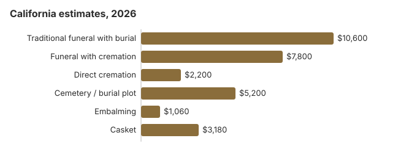

Funeral Costs in California: What Families Pay in 2026
California is one of the more expensive places to hold a funeral: our 2026 estimate for a traditional service with burial is about $10,600, 28% above the $8,300 national median, while a service with cremation runs near $7,800 and direct cremation starts around $2,200. With 65% of families choosing cremation, California has plenty of low-cost cremation providers. Below are the item prices, the new $26 fee for a California death certificate, county help, veterans cemeteries and the state rules.
California Funeral Prices, Item by Item
These are our California item estimates. The Cemetery and Funeral Bureau licenses homes but leaves prices to each one.
| Item | Estimate | Range seen |
|---|---|---|
| Traditional funeral with burial | $10,600 | $7,950 – $13,780 |
| Funeral with cremation | $7,800 | $6,240 – $10,140 |
| Direct cremation | $2,200 | $1,540 – $3,080 |
| Cemetery / burial plot | $5,200 | $2,600 – $10,400 |
| Embalming | $1,060 | $500 – $1,500 |
| Casket | $3,180 | $1,060 – $8,480 |
Read these as estimates: the California figures come from our pricing model, not from surveying local homes, and are not a quote or professional advice. Our method and disclaimer explain more.
State sources: Cal. Health & Safety Code § 7104.

Los Angeles and Other California Cities
Los Angeles, San Francisco and San Diego homes charge more than inland ones; our city estimates:
Why California Prices Differ
Western prices run above the $8,300 US median, and inside California the gap between a large metro such as Los Angeles and a small town is often 10-30%.
Cheaper Ways to Hold a California Funeral
| Option | About | What you get |
|---|---|---|
| Direct cremation | $2,200 | Cremation with no viewing or service; California needs a permit but sets no fixed wait (Health & Safety Code § 103050). |
| Direct burial | $5,300 | No embalming or viewing; the California cemetery bills plot and opening separately. |
| Green burial | $5,830 | A shroud or simple casket and no embalming, where a California cemetery permits it. |
| Cremation + memorial | $7,800 | Cremation and a later memorial |
| Traditional funeral | $10,600 | Viewing, service, burial |
California Charges to Check
- Embalming presented as required. California requires it only when a body is shipped by common carrier; refrigeration is the usual alternative.
Federal Rights in California
California families can send a Funeral Rule complaint to the FTC at ftc.gov and get free advice from the Funeral Consumers Alliance.
Paying for a California Funeral
- California has no state funeral payment; indigent burial and cremation are county programs under Health & Safety Code § 7104, so the rules and amounts change from one county to the next.
- The $255 Social Security death payment goes only to an eligible surviving spouse or child; in California, as elsewhere, they apply by calling 1-800-772-1213 within two years of the death.
- VA reimburses part of a California veteran's funeral through Form 21P-530EZ, filed by whoever paid; deaths not connected to service on or after October 1, 2026 qualify for up to $1,032 for burial and $1,032 for the plot, as our veteran burial benefits guide explains.
- Medi-Cal, charities and other help are in our payment assistance guide and the funerals with no money page.
Educational Resources
- Funeral Consumers AllianceIndependent nonprofit consumer advocacy for funeral rights
- FTC Funeral RuleThe federal rule protecting funeral consumers
- Funeral Insurance GuideCompare final expense and burial insurance options
- Best Burial Insurance CompaniesSide-by-side comparison of top burial insurance providers
- Payment Assistance GuideGovernment programs and financial help for funeral costs
- Insurance Plan ComparisonCompare coverage, premiums, and payout speed across providers
Compare Funeral Costs
- Average Funeral Cost in 2026National cost breakdown with real prices
- Cremation vs. Burial Cost ComparisonSide-by-side price comparison to help you decide
- Funeral Cost BreakdownEvery line item explained: know what you're paying for
- Cheapest Funeral OptionsLower-cost alternatives, with typical price ranges
- Direct Cremation: Most Affordable OptionNFDA 2023 median $2,645 with a family-supplied container (latest available)
- How to Compare Funeral PricesStep-by-step guide to getting the best price
California Cremation and Burial Pages
Each choice is covered in detail:
Cremation Costs in California
About 65% of California families cremate. Direct cremation begins near $2,200 and a service with cremation near $7,800; the page also explains urns and where ashes may be scattered.
Burial Costs in California
A plot from about $5,200, then casket, vault, marker and opening: a California burial runs $24,160-$28,660.
Shopping Outside the Los Angeles Area
Western funeral pricing in California is pulled up by real estate and labor costs in the Los Angeles area, but drops noticeably in smaller markets. The $10,600 statewide average hides a real spread; you can find full-service providers in smaller California cities at $8,480 and Los Angeles-area providers at $12,720+ for comparable services. Driving to a lower-priced provider elsewhere in California is often worth it for a family event of this size.
California: Cremation Compared With Burial
Cremation
- Direct cremation from around $2,200
- Around $7,800 with a service
- No grave needed
- Memorial on your own timing
- 65% of California families choose it
Traditional Burial
- Traditional funeral around $10,600
- Plot around $5,200
- Vault or liner usually needed
- A permanent place to visit
- Metal casket: near $2,500 as a national median (NFDA 2023 General Price List Study); California prices differ by seller
How to Begin a California Funeral
- Make the burial-or-cremation call: cremation in California or burial in California.
California death certificates: $26 a copy from 2026
Since January 1, 2026, the California Department of Public Health charges $26 for each certified copy of a death record, up from $24, under Assembly Bill 64 (CDPH, vital records fees; checked October 29, 2026). Fees are set in statute, and if no record is found CDPH sends a Certificate of No Public Record and keeps the fee.
- Authorized or informational copy: banks, insurers and courts usually want an authorized certified copy, which needs a notarized sworn statement signed under penalty of perjury. An informational copy needs no notary but is marked as not valid to establish identity.
- From the county: for a recent death, the county recorder or health department where the death was registered is usually the fastest source, and it is the place to go in person.
- From the state by mail: the VS 112 application and a check or money order payable to CDPH Vital Records go to MS 5103, P.O. Box 997410, Sacramento, CA 95899-7410. Since July 1, 2026, CDPH accepts applications only by mail and no longer takes them from online vendors.
At $26 each, eight copies cost $208, so count how many accounts and policies need an original before ordering.
California's funeral bureau, county programs and veterans cemeteries
California funeral homes are licensed by the California Cemetery and Funeral Bureau; a family that is refused a price list or pushed into extras can phone the Bureau at 916-574-7870.
The Funeral Consumers Alliance does not count California among the nine states that require a funeral director for any part of after-death care. A California family can therefore do much of the work itself, as long as the death certificate and disposition permit are filed.
California has no set waiting period before cremation, though a permit must be issued first (Health & Safety Code § 103050).
County indigent burial
Indigent burial and cremation are handled by each county under Health & Safety Code § 7104, so the rules differ from county to county; the coroner or public administrator in the county of death can explain them. (Source: Cal. Health & Safety Code § 7104.)
Veterans cemeteries in California
The funeral home books national cemetery graves through the VA's National Cemetery Scheduling Office (800-535-1117): Bakersfield (661-867-2250), Los Angeles National Cemetery Annex (310-268-4675, cremated remains only), Miramar (858-658-7360), Riverside (951-653-8417), Sacramento Valley (707-693-2460) and San Joaquin Valley (209-854-1040). Four state and tribal cemeteries take requests directly: Big Sandy Rancheria Veterans Cemetery (tribal, 559-374-0066), California Central Coast Veterans Cemetery (831-393-9371), Northern California Veterans Cemetery (866-777-4533) and Yurok Veterans Cemetery (tribal, 707-482-1350).
California steps
- Get a General Price List from every California home you visit; the FTC Funeral Rule says you must be handed one.
- Ask whether embalming is really needed for what you have planned.
- If nobody can pay, phone the county coroner or public administrator in the county of death before hiring a home.
- For a veteran, have the home ask about Riverside National Cemetery before you pay for a private plot.
- Take price-list complaints to the bureau at 916-574-7870.
Frequently Asked Questions
How much does a California funeral cost in 2026?
A traditional California funeral averages about $10,600, which is 28% more than the $8,300 US median. Funerals ending in cremation average about $7,800, direct cremation starts near $2,200, and a burial brings roughly $5,200 more in cemetery charges.
Is cremation the cheaper choice in California?
Yes, and the gap is large. At about $2,200, direct cremation undercuts the $10,600 traditional funeral by some $8,400, and by about $13,600 when you add the roughly $5,200 a California cemetery would charge.
What rights does a California family have?
The federal FTC Funeral Rule gives California families the right to an itemized price list, to prices over the phone, and to buy only the goods and services they want. California is not among the nine states the Funeral Consumers Alliance lists as requiring families to hire a funeral director. The California Cemetery and Funeral Bureau, 916-574-7870, licenses California funeral homes and takes complaints.
How can a California family lower the bill?
Get General Price Lists from at least three California homes and set them next to each other, drop any package item you would not have chosen on its own, and if money decides it, go with direct cremation at about $2,200. Conservation burial grounds and hybrid cemetery sections in California typically cost 30-50% less than traditional plots in the same cemetery.
Is embalming required in California?
Not for a funeral or burial in California. The main requirement is for shipping: under Health and Safety Code § 7355, a common carrier may accept a body only if it has been embalmed and placed in a sound casket and shipping case, or, if embalming is not possible, sealed in an airtight metal casket or case.
If the body stays in California and is refrigerated, embalming is your choice. It costs about $1,060 here on this page's estimate, above the national median of $845 in NFDA's 2023 survey. The Cemetery and Funeral Bureau (916-574-7870) takes complaints about charges you did not approve.
Are California funerals above the national average?
More expensive. The NFDA's 2023 national medians were $8,300 for a viewing and burial and $6,280 for a funeral with cremation, and the California table on this page lands above both. Real quotes from nearby homes are still the better guide.
What is the cheapest funeral in California?
Direct cremation, from roughly $2,200. If you want a burial: Direct burial is the next step up at about $5,300, which is $5,300 below a traditional California funeral.
How do I find a lower-priced California funeral home?
Call several California homes; the FTC Funeral Rule makes them quote prices on the phone. A casket or urn bought elsewhere must be accepted with no extra fee.